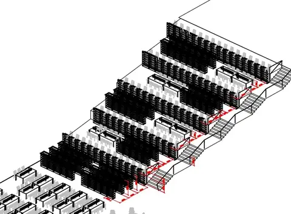
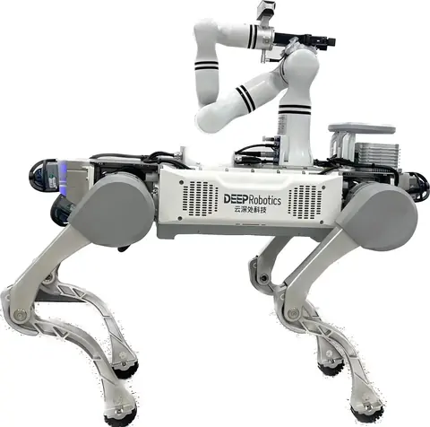
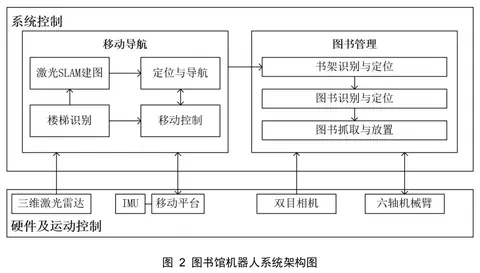
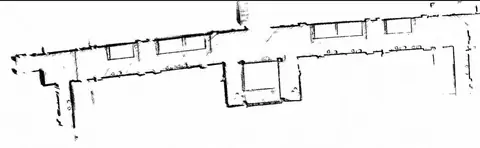
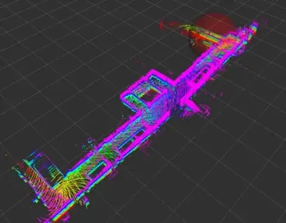
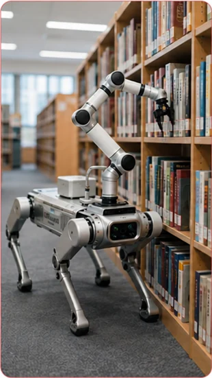
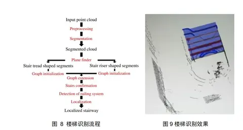
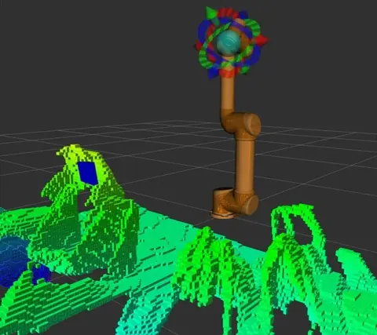

移动操作Mobile manipulation · 2023.02—2024.07Feb 2023–Jul 2024 · 深圳理工大学Shenzhen University of Advanced Technology
四足移动操作机器人跨楼层图书整理与自主取放系统Quadruped mobile manipulation for cross-floor book organization and pick-and-place
面向多楼层图书整理与自主取放，融合激光惯性 SLAM、视觉图书定位和抓取规划；完成四足上下楼、楼层移动及书架操作的实机演示。For multi-floor book handling, LiDAR–inertial SLAM, visual book localization, and grasp planning support a quadruped manipulator; real demonstrations cover stairs, floor-to-floor mobility, and shelf operation.
- 项目时间Period
- 2023.02—2024.07Feb 2023–Jul 2024
- 合作单位Partner
- 深圳理工大学Shenzhen University of Advanced Technology
- 本人职责Role
- 主要研发成员Research and development contributor
项目背景Background
阶梯式或多楼层图书馆中，图书整理需要在楼层、书架和取放位置之间连续移动。项目以四足机器人的楼梯通行能力结合机械臂操作，连接跨楼层运输和图书整理。Stepped and multi-floor libraries require robots to move between floors, shelves, and manipulation poses. A quadruped carries an arm to connect stair traversal with book organization.
图书馆任务还要求机器人从“到达书架”进一步完成“对准目标书籍并可靠取放”。跨楼层移动、近架定位和机械臂作业的误差会逐级影响末端执行，因此需要将移动能力与视觉、抓取和反馈控制共同设计。Reaching a shelf is only the first step: the robot must align with a particular book and manipulate it reliably. Errors in floor traversal, shelf-side localization, and arm motion affect final execution, motivating joint design of mobility, perception, grasping, and feedback.

任务说明Task
接收取书或放书任务后，机器人定位目标书架与书籍，移动到操作位置，生成抓取或插入位姿并执行取放。跨楼层时需要保持平台与运送物品稳定，并在到达书架后完成对位。Given a retrieval or return request, the robot localizes the shelf and book, moves to an operation pose, plans grasp or insertion poses, and executes the action. Floor transitions require stable transport, followed by shelf alignment.
任务链分为跨楼层接近、书架前定位、视觉确定目标、机械臂取放及作业后转移。楼梯识别和环境建图支撑移动，目标三维位置与夹持反馈支撑近距离操作，连接楼层间运输与书架端的具体作业。The workflow comprises cross-floor approach, shelf-side positioning, target perception, arm pick-and-place, and departure. Stair recognition and mapping support travel, while 3D target localization and gripper feedback support manipulation, connecting floor-to-floor transport with shelf-side work.
设备说明Robot hardware
四足平台采用云深处机器人，配合睿尔曼机械臂、Livox 三维激光雷达和 RealSense 相机。激光雷达与惯性信息服务于建图定位，相机服务于书架与书籍感知。The platform combines a DEEP Robotics quadruped, a RealMan arm, Livox 3D LiDAR, and RealSense sensing. LiDAR and inertial data support mapping and localization; cameras observe shelves and books.

系统和关键技术System and key technologies
系统将环境感知、SLAM、三维定位、路径规划和机械臂运动学连接为取放流程。书架与书籍感知提供目标位姿，抓取规划和逆运动学生成机械臂动作，底盘导航负责在楼层和书架之间转移。系统架构还包括 ROS 2、Nav2、MoveIt 2、视觉伺服、夹持反馈和重试恢复。The system connects perception, SLAM, 3D localization, path planning, and arm kinematics. Shelf and book perception supply target poses, grasp planning and inverse kinematics produce arm actions, and navigation transfers the robot between floors and shelves. The architecture also includes ROS 2, Nav2, MoveIt 2, visual servoing, gripper feedback, and recovery.
导航侧使用点云与惯性信息持续估计平台位姿，并将楼梯与障碍区域作为通行条件；操作侧根据目标位姿完成抓取规划与逆运动学求解。视觉伺服和夹持反馈用于减小到位误差，识别或抓取不满足条件时进入调整与重试流程。Point clouds and inertial sensing maintain the platform pose and support traversal decisions around stairs and obstacles. Target poses feed grasp planning and inverse kinematics. Visual servoing and gripper feedback reduce positioning error, with adjustment and retry when perception or grasp conditions are unmet.
- Livox / IMU / RGB-D感知Livox / IMU / RGB-D sensing
- SLAM定位与三维建图SLAM and 3D mapping
- Nav2移动导航Nav2 mobile navigation
- 书架与书本位姿估计Shelf and book pose estimation
- MoveIt 2抓取与取放MoveIt 2 grasping and placement



演示与结果Demonstrations and results
视频补充完整样机移动、机械臂抓书、楼梯接近、上下楼与不同场景行驶。导航与操作通过统一任务流程衔接；书架附近的感知与操作画面用于说明从目标定位到抓取执行的过程。The demonstrations cover prototype mobility, book grasping, stair approach and traversal, and movement in different settings. Navigation and manipulation are connected through the task flow, with shelf-side footage showing perception and action.

实验与系统迭代Experiments and iteration
PPT 记录楼梯识别、三维感知与抓取验证，并指出嵌入式算力、遮挡、光照和复杂图书摆放是后续优化重点。桌面平放与堆叠书籍的处理、双臂协作和边走边抓属于材料中的后续规划。The slides document stair recognition, 3D perception, and grasp tests, while identifying embedded compute, occlusion, lighting, and book arrangements as areas for improvement. Handling flat or stacked books, dual-arm work, and manipulation while moving are listed as future directions.

